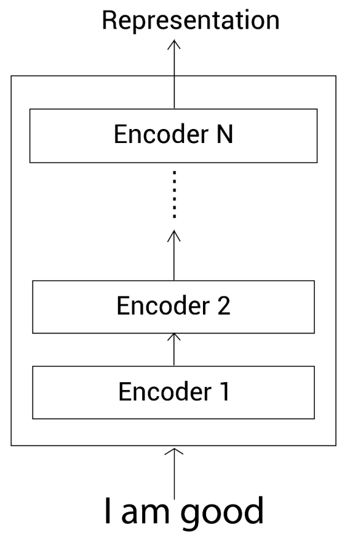
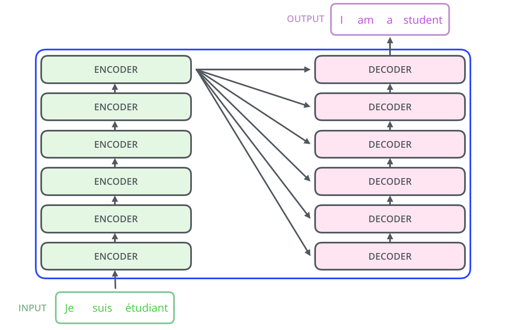
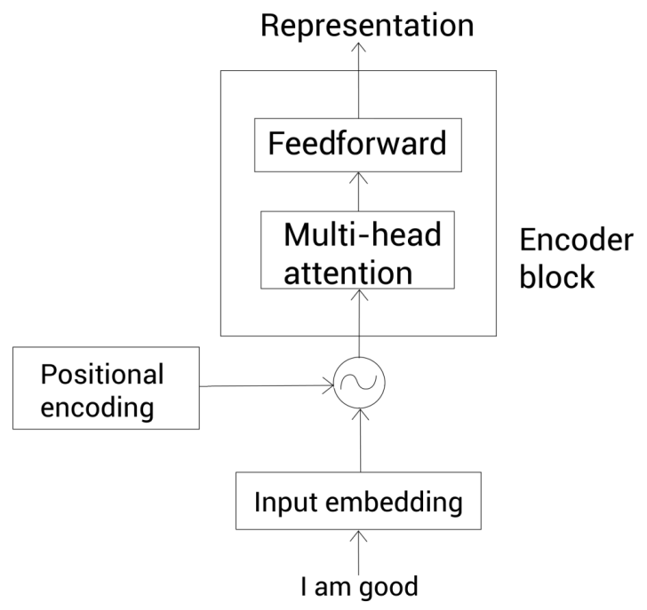
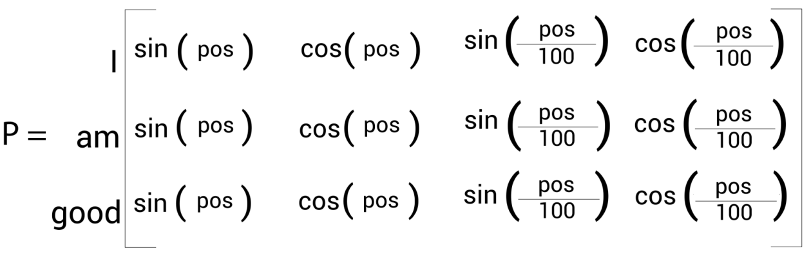

Natural Language Processing
Table of Contents
- 1. Introduction
- 2. Big Picture
- 3. Linguistic Analysis
- 4. Language Modelling
- 5. Word Embeddings
- 6. Evaluation Metrics
- 7. Transformer
1. Introduction
1.1. What is a Language Model?
- Given a set of words, if it can predict the next word, it’s called a language model.
- If the number of parameters is massive (probably billions), it’s called a large language models.
1.2. What is Natural Language Processing?
- An automated system which is capable of processing and analyzing text data.
\[ \text{Unstructured Language} \xrightarrow[\text{}]{\text{Natural Language Understanding}} \text{Structured Language}\] \[ \text{Unstructured Language} \xleftarrow[\text{}]{\text{Natural Language Generation}} \text{Structured Language}\]
An NLP task can be modelled as a general machine-learning problem:
\[ \text{Input Text} \rightarrow \text{Preprocessing} \rightarrow \text{Feature Extraction} \rightarrow \text{Training} \rightarrow \text{Testing} \]
1.3. Change in Metrics
- When the output is a label, you can use metrics like precision, recall and accuracy.
1.4. Some Applications
1.4.1. NLP Text Summarization
| Extractive | Abstractive |
|---|---|
| The summary will contain exact sentences from the original document. | The summary will contain new, rephrased sentences. |
1.4.2. Spam Detection
- This is a simple classification problem.
1.5. Research Areas in NLP
1.5.1. Multimodal NLP
- The model can handle different data modalities like images, audio, sensor data, etc.
1.5.2. Large Scale Pre-trained LLMS
- Make an open-domain LLM like ChatGPT, which can be used for anything.
1.5.3. Explainable AI in NLP
- Make it such that you’re able to justify why exactly a model gave that answer, and not treat it as a black box.
1.5.4. Conversational AI and Dialogue Systems
- Make a model that can talk like a human being.
1.5.5. Zero-shot and few shot learning
- Zero-shot learning is where a model performs tasks on completely unseen data.
- Few-shot learning is where a model is first provided with a small number of labeled examples to adapt to it, and then perform the tasks.
1.6. Challenges of NLP
1.6.1. Lexical Ambiguity
This is when a single word can have multiple meanings. For example:
I found him at the bank
Bank could mean
- River Bank
- Monetary Bank
1.6.2. Language Ambiguity
Lexical ambiguity was word level. Language ambiguity is structural level.
The man saw the bow with the binoculars
Here’s another example:
I made her duck
This could mean:
- I cooked duck for her
- I cooked duck that belonged to her
- I made her bend down (basically duck used as a verb)
2. Big Picture
2.1. Text Preprocessing
2.1.1. Tokenization
- This is the process of segmenting a string, into unique words called tokens.
2.1.2. Sentence Segmentation
- Deciding where the sentences begin and end.
2.1.3. Normalization
- Normalization is where we convert raw, unstructured text into a simpler, consistent and standard format.
- This is what what enables algorithms to treat different variations of the word as the same token.
- This simpler and consistent format has to strike a balance between making it simpler for the model to work on, and not losing the actual meaning of the text.
- There are three types of normalization: case folding, stemming and lemmatization.
- Case Folding
- One simpler, consistent format could be turning all of the text into the same case (usually lower case).
- This isn’t preferred often because you lose more information.
- An example could be “US” (which refers to the United States), but in lower case it’d would be “us”.
- Stemming
- Stemming is essentially crude chopping of affixes.
- For example, “automate”, “automatic”, “automation” are all converted to “automat”.
- The resultant word doesn’t have to be an actual dictionary word. It’s an abruptly formed piece of text.
- “Stem” means the core meaning of a word, without anything unecessary attached.
- Lemmatization
- Here, you convert it into the equivalent root word.
- This is different from stemming because this root word isn’t an abruptly cut-off piece of text - it’s an actual word from a dictionary.
For example:
Word Stemming Lemmatization studies studi study wolves wolv wolf
2.2. Bag of Words
2.2.1. What it is
- It’s a dictionary that tells you how many unique words are present in each piece of text.
- It’s a sparse dictionary as each piece of text need not contain all unique words.
- These may/may not contain stop-words or things like those.
For example,
data_given = ['The quick brown brown fox', 'Fox news is the best']best brown fox is news quick the Sentence1 → 0 2 1 0 0 1 1 Sentence2 → 1 0 1 1 1 0 1 This is called a Term-Document Matrix.
2.2.2. Advantages vs Disadvantages
- The only advantage is that this is easy to compute.
- It loses order of words. For example, “dog bites man” and “man bites dog” can’t be distinguished.
- It fails to capture semantic relationships.
- For example, “car” and “automobile” have no relation according to Bag of Words.
- Another example is where if the word “the” appears 100 times and the word “photosynthesis” appears thrice, it considers the word “the” more important.
- That’s why techniques like word embeddings (word2vec) or transformer-based models (BERT) are preferred because they capture semantic similarity and represent words in a dense continuous vector space.
2.3. TF-IDF
2.3.1. What it is
- It stands for term frequency - inverse document frequency.
\[TF(t,D) = \frac{D_{t}}{T}\] \[IDF(t) = \log(\frac{N}{\text{df}(D,t)})\] where
- \(D_{t}\) is the number of times the word \(t\) has occured in document \(D\).
- \(T\) is the number of words/terms in document \(D\).
- \(N\) is the total number of documents
- \(\text{df}(D,t)\) is the document frequency of the word \(t\). It basically tells us the number of documents in which the word \(t\) has occurred.
- An example mentioned previously was that if the word “the” appears 100 times and the word “photosynthesis” appears thrice, BoW would consider the word “the” more important.
- TF-IDF fixes this by measuring how informative the word is. If a word appears in every document (like say, the word “the”), it isn’t that informative. But if it appears in that document alone, it is more informative and has a higher IDF score.
- Consider the following 3 documents:
- D1: “the cat sat on the mat”
- D2: “the dog sat on the log”
D3: “the cat chased the dog”
the cat sat on mat dog log chased \(TF(\text{word},D1)\) \(\frac{2}{6}\) \(\frac{1}{6}\) \(\frac{1}{6}\) \(\frac{1}{6}\) \(\frac{1}{6}\) \(0\) \(0\) \(0\) \(TF(\text{word},D2)\) \(\frac{2}{6}\) \(0\) \(\frac{1}{6}\) \(\frac{1}{6}\) \(0\) \(\frac{1}{6}\) \(\frac{1}{6}\) \(0\) \(TF(\text{word},D3)\) \(\frac{2}{5}\) \(\frac{1}{5}\) \(0\) \(0\) \(0\) \(\frac{1}{5}\) \(0\) \(\frac{1}{5}\) \(IDF(\text{word})\) \(\log_{2}(\frac{3}{3})\) \(\log_{2}(\frac{3}{2})\) \(\log_{2}(\frac{3}{2})\) \(\log_{2}(\frac{3}{2})\) \(\log_{2}(\frac{3}{1})\) \(\log_{2}(\frac{3}{2})\) \(\log_{2}(\frac{3}{1})\) \(\log_{2}(\frac{3}{1})\) Then for each term in this matrix, you calculate \[\text{TF-IDF}(\text{word}, D) = TF(\text{word},D) \times IDF(t)\]
For example:
- \(\text{TF-IDF}(\text{'the'}, D1) = 0.333 \times 0.000 = 0.000\) (makes sense: ’the’ is in every doc, tells us nothing specific)
- \(\text{TF-IDF}(\text{'cat'}, D1) = 0.167 \times 0.585 = 0.098\)
- \(\text{TF-IDF}(\text{'sat'}, D1) = 0.167 \times 0.585 = 0.098\)
- \(\text{TF-IDF}(\text{'dog'}, D1) = 0.000 \times 0.585 = 0.000\)
2.3.2. Disadvantages
Just like BoW, this is also based on word counts only. It lacks any understanding or word meaning or order.
- For example, “I love NLP” and “I do not love NLP” would produce similary TF-IDF vectors despite opposite meanings.
- It still can’t tell you that “car” and “automobile” are semantically similar.
3. Linguistic Analysis
3.1. Qualities of a Language
- Ambiguous: Same words can mean different things
- Structured: Words must follow grammatical rules to make sense
- Context Dependent: Meaning of a word depends on the words which surround it
3.2. Levels of Linguistic Analysis
- These are the 3 types of patterns that a model should learn.
- Traditionally, NLP meant explicit rules for the levels of linguistic analysis.
- Now modern NLP (BERT, GPT) learn these patterns automatically.
3.2.1. Morphology
- This has to deal with the structure of words (eg. run, running, runner)
- For this, we use tokenization and normalization.
- Morphemes
- A morpheme is the smallest unit of grammatical or semantic meaning in a language.
- For example, the word “runs” can be divided into two morphemes:
- run: means “move quickly on foot”
- -s: means “3rd person singular present tense verb”
- Similarly, “unlucky” can be divided into morphemes un, lucky and -y.
- When a word is broken down into morphemes, it’s split into
- stem / root: The central meaning-bearing part. Eg. walk in “walking”/
- affix: A morpheme that attaches to a stem.
- All affixes are bound morphemes, but all bound morphemes aren’t affixes. Eg. -mit in submit is a bound morpheme, but is not an affix.
- Affixes include prefix, suffix, etc.
- Phonemes are the smallest, individual units of sound in a language (e.g., k, a, t), whereas morphemes are the smallest units of meaning. Phenomes combine to form morphemes.
There are two ways you can classify morphemes:
Free morphemes Bound morphemes They carry a semantic meaning of its own and doesn’t need a prefix/suffix They need a prefix/suffix to convey a semantic meaning Eg. run in runs Eg. -s in runs Content Morphemes Functional Morphemes Carries semantic Content Provides grammatical information Eg. ’car’, ’-able’ Eg. ’a’, ’the’, ’he’, ’-s’ (plural) - Types of Morphology
These are basically two types of bound morphemes.
- Inflectional Morphology
- Slightly modify words for grammar, but not changing core category or part of speech.
- All we have to know is that they don’t create a new dictionary word. The base token is still the same.
- Eg. Turning “run” to “runs”, or “quick” to “quicker”.
- Derivational Morphology
- Creates new words with different meanings of part of speech by adding affixes
- A new dictionary word is created because of change in semantics.
- Eg. Turning “teach” (verb) to “teacher” (noun), or “happy” to “unhappy” (both adjectives but the meaning has changed).
- Inflectional Morphology
3.2.2. Syntax
- This has to deal with the structure of sentences.
- For this we use Parts-of-speech tagging (POS tagging).
- Constituency
- They’re a group of words that behave as single grammatical units within a sentence.
This “group of words” could be a clause, a phrase or even a single word.
Phrase Type Example Noun Phrase ’the big red dog’ Verb Phrase ’chased the mouse’ or ’eating an apple’ Prepositional Phrase ’on the mat’ Adjective Phrase ’very happy’ or ’quite large’
- CFG
- Preterminals are terminal variables which directly correspond to a terminal.
- Eg. Noun → amrita
- These are usually what’s used for POS tags.
- Parsing
- There are two kinds of parsing.
Constituency Parsing Dependency Parsing Builds a tree out of constituencies Builds a directed graph out of grammatical dependencies The leaf nodes will be the actual words of the sentence The root is the main verb, and the rest of the tree tells how everything works around this
3.2.3. Semantics
- After understanding structure of words (morphology) and structure of sentences (syntax), we now have to understand what all the words mean, and this is called semantics
- Lexicon is the English term for Bag of Words.
- Lexeme is a pair of an orthographic form (spelling), phonological form (pronounciation).
- Homonymy
- It’s the relation that holds between words which have the same form (both orthographical and phonological), with unrelated meanings.
- Eg. Bat (cricket bat) vs Bat (mammal)
- Eg. Bank (river bank) vs Bank (financial bank)
- Homophones
- Words with the same phonological form but different orthographic form (same pronounciation but different spelling)
- Eg. Write vs Right
- Eg. Piece vs Peace
- Homographs
- Lexems with the same orthographic form (spelling) but different meanings. They may/may not have the same phonological form.
- Eg. Live (live life) vs Live (live tv show).
- Polysemy
- It’s just like hononymy where you have the same form, but different meanings, but they’re not entirely different.
- The meanings are different, but have some semantic relationship.
- Eg. “The bank was constructed in 1875” talks about the bank as a building, but “I have an account at this bank” talks about the bank as an institution.
- Synonymy
- Relation between senses (synonyms)
- But an exception could be “big” and “large”. Big plane and large plane mean the same, but Big sister and large sister don’t.
- Antonyms
- Words that are opposite with respect to one of their features, elsewise being similar in sense.
- Eg. Hot and cold are opposites, but both talk about temperature.
- Hyponymy and Hypernymy
- Car is a subclass (hyponym) of vehicle
- Vehicle is a superclass (hypernym) of car.
- Meronym and Holonym
- Wheel is a part (meronym) of car.
- Car has a part (holonym) called wheel.
4. Language Modelling
- Check out the basics of probability here.
4.1. Bayes Theorem
\[ P(A | B) = \frac{P{(A,B)}}{P(B)} \]
For example
\[ P(\text{office} | \text{about fifteen minutes from}) = \frac{P{(\text{office}, \text{about fifteen minutes from})}}{P(\text{about fifteen minutes from})} \]
where \(P(\text{about fifteen minutes from}) = P(\text{about}) \times P(\text{fifteen} | \text{about}) \times P(\text{minutes} | \text{about fifteen}) \times P(\text{from} | \text{about fifteen minutes})\)
4.2. Markov Assumption to solve Data Sparsity
\[ P(\text{office} | \text{about fifteen minutes from}) = \frac{\text{about fifteen minutes from office}}{\text{about fifteen minutes from}} \]
- Language is infinitely large.
- It’s astronomically improbable to find this exact sequence of words in the dataset.
- Markov’s assumption is that the future only depends on the very recent past, and not the entire past.
- All in all, to find the next word, we only need a couple of previous words. You don’t every single word before it.
- The name of this model is N-gram.
4.3. N-Gram models
- It’s a statistical language model that predicts the probability of a word in a sequence based on the preceding ’N-1’ words.
- It assumes the next word depends only on the previous \(n-1\) words.
4.3.1. Example:
Say we have 3 strings in our corpus:
< start >I am here< /stop > < start >who am I< /stop > < start >I would like to know< /stop >
- Unigrams
- \(P(\text{< start >}) = \frac{3}{17}\)
- \(P(\text{< /stop >}) = \frac{3}{17}\)
- \(P(\text{I}) = \frac{3}{17}\)
- \(P(\text{am}) = \frac{2}{17}\)
- \(P(\text{here}) = \frac{1}{17}\)
- \(P(\text{who}) = \frac{1}{17}\)
- \(P(\text{would}) = \frac{1}{17}\)
- \(P(\text{like}) = \frac{1}{17}\)
- \(P(\text{to}) = \frac{1}{17}\)
- \(P(\text{know}) = \frac{1}{17}\)
\[\text{Perplexity} \propto \frac{1}{\text{Model Performance}}\] Lower the perplexity, better the model.
- Bigrams
\[P(w_{i} | w_{i-1}) = \frac{count(w_{i-1}, w_{i})}{count(w_{i-1})}\]
- Examples of bigrams here are
I am,am here,who am,am I, etc.
- \(P(\text{I} \mid \text{< start >}) = \frac{count(\text{< start >}, \text{I})}{count(\text{< start >})} = \frac{2}{3}\)
- \(P(\text{who} \mid \text{< start >}) = \frac{count(\text{< start >}, \text{who})}{count(\text{< start >})} = \frac{1}{3}\)
- \(P(\text{am} \mid \text{I}) = \frac{count(\text{I}, \text{am})}{count(\text{I})} = \frac{1}{3}\)
- \(P(\text{would} \mid \text{I}) = \frac{count(\text{I}, \text{would})}{count(\text{I})} = \frac{1}{3}\)
- \(P(\text{< /stop >} \mid \text{I}) = \frac{count(\text{I}, \text{< /stop >})}{count(\text{I})} = \frac{1}{3}\)
- \(P(\text{here} \mid \text{am}) = \frac{count(\text{am}, \text{here})}{count(\text{am})} = \frac{1}{2}\)
- \(P(\text{I} \mid \text{am}) = \frac{count(\text{am}, \text{I})}{count(\text{am})} = \frac{1}{2}\)
- \(P(\text{< /stop >} \mid \text{here}) = \frac{count(\text{here}, \text{< /stop >})}{count(\text{here})} = 1\)
- \(P(\text{am} \mid \text{who}) = \frac{count(\text{who}, \text{am})}{count(\text{who})} = 1\)
- \(P(\text{like} \mid \text{would}) = \frac{count(\text{would}, \text{like})}{count(\text{would})} = 1\)
- \(P(\text{to} \mid \text{like}) = \frac{count(\text{like}, \text{to})}{count(\text{like})} = 1\)
- \(P(\text{know} \mid \text{to}) = \frac{count(\text{to}, \text{know})}{count(\text{to})} = 1\)
- \(P(\text{< /stop >} \mid \text{know}) = \frac{count(\text{know}, \text{< /stop >})}{count(\text{know})} = 1\)
Calculating the probability of the sentence
< start >I am here< /stop >: \[= P(\text{I} \mid \text{< start >}) \times P(\text{am} \mid \text{I})\times P(\text{here} \mid \text{am})\times P(\text{< /stop >} \mid \text{here})\] \[= \frac{2}{3} \times \frac{1}{3} \times \frac{1}{2} \times 1 \] \[= \frac{1}{9}\]The issue with this is that for larger sentences, this final probability would be too small to be precise enough. Sometimes the numbers get so small that it gets rounded off to zero. This is called floating point underflow.
For this you take log on both sides. The multiplication on the RHS hence turns into addition. \[log(p_{1} \times p_{2} \times p_{3} \times p_{4}) = log(p_{1}) + log(p_{2}) + log(p_{3}) + log(p_{4})\] Working in log space solves underflow and moreover addition is faster than multiplication.
- Examples of bigrams here are
- Trigram
- \(P(\text{am} \mid \text{< start >}, \text{I}) = \frac{count(\text{< start >}, \text{I}, \text{am})}{count(\text{< start >}, \text{I})} = \frac{1}{2}\)
4.3.2. Fixing Zero Probabilities
- The probability of N-gram is basically S\(\frac{count(\text{new word} \mid \text{last n-1 words})}{count(\text{last n-1 words})}\)
- If there is no sentence with the new word, then the numerator becomes 0, leading to zero probabilities.
- Smoothing
- Add 1 (Laplacian Smoothing)
- To every single word in the vocabulary, you assume that the count is 1 more than what it actually is.
- The probability of n-gram is now \(\frac{count(\text{new word} \mid \text{last n-1 words}) + 1}{count(\text{last n-1 words}) + v}\), where v is the size of the vocabulary.
- Add k
- The probability of n-gram is \(\frac{count(\text{new word} \mid \text{last n-1 words}) + k}{count(\text{last n-1 words}) + k\v}\), where v is the size of the vocabulary.
- Add 1 (Laplacian Smoothing)
- Backoff and Interpolation
4.3.3. POS Tagging
- Suppose you want to use a HMM tagger to tag the phrase, “the beautiful lady” where we have the following probabilities
- \(p(\text{the}|\text{det}) = 0.3\)
- \(p(\text{the}|\text{noun}) = 0.1\)
- \(p(\text{beautiful}|\text{noun}) = 0.01\)
- \(p(\text{beautiful}|\text{adj}) = 0.07\)
- \(p(\text{beautiful}|\text{verb}) = 0.001\)
- \(p(\text{lady}|\text{noun}) = 0.08\)
- \(p(\text{lady}|\text{verb}) = 0.01\)
- \(p(\text{verb}|\text{det}) = 0.00001\)
- \(p(\text{noun}|\text{det}) = 0.5\)
- \(p(\text{adj}|\text{det}) = 0.4\)
- \(p(\text{noun}|\text{noun}) = 0.2\)
- \(p(\text{adj}|\text{noun}) = 0.002\)
- \(p(\text{noun}|\text{adj}) = 0.2\)
- \(p(\text{noun}|\text{verb}) = 0.3\)
- \(p(\text{verb}|\text{noun}) = 0.3\)
- \(p(\text{verb}|\text{adj}) = 0.001\)
- \(p(\text{verb}|\text{verb}) = 0.1\)
Work out in details the steps of the Viterbi algorithm. Assume all other conditional probabilities, not mentioned, to be zero. Also, assume that all tags have the same probabilities to appear in the beginning of a sentence.
We contruct a graph (looks exactly like a neural network, and it’s called the trellis diagram), where
- Each layer is dedicated to one word of the sentence
- Each node of the layer, is a possibility of what part of speech that word could have.
\(S_{i}(j)\) is the probability of the most likely path that ends in tag \(i\), at word position \(j\).
\[S_{i}(j) = P(\text{Word }j \mid \text{POS Tag }i) \times P(\text{POS Tag }i)\]
At word position 1, we assume that the probability of each POS tag is uniformly distributed. In our case we have 4 POS tags, so each POS tag will have probability 0.25.
\[S_{1}(1) = P(\text{the} \mid \text{Det}) \times P(\text{Det}) = 0.3 \times 0.25 = 0.075\]
From the next word onwards (\(S_{i}(2)\)), \(P(\text{POS Tag }i)\) will be the max of the probabilities in that layer.
\[S_{i}(j) = \text{max}[ P(\text{Word }j \mid \text{POS Tag }i) \times P(\text{POS Tag }i \mid \text{POS Tag }k) \times S_{i-1}(k)]\]
5. Word Embeddings
- Word embedding is a natural language processing technique that converts words into dense numerical vectors, capturing their semantic meanings and relationships.
- Distributional Hypothesis is the idea that tells us that a word is known by the company it keeps.
- The one-hot encoding of the word “king” among a total of 100 words would be a \(100\times1\) vector that looks like \[\text{king} = \begin{bmatrix} 0 \\ 1 \\ 0 \\ ... \\ ... \end{bmatrix}\]
Instead of such a large and sparse vector, we can represent the word using a smaller and denser vector. Each dimension wouldn’t be the other words in the dictionary like one-hot encoding. Here, each dimension would represent some abstract property.
King Queen Women Princess Royalty 0.99 0.99 Age 0.99 0.2 Wise 0.8 .. 0.2 - Arithmetic operations on these actually give meaningful results. The difference between the vector embedding of a word and the vector embedding of its plural is almost the same for any word.
5.1. Word to Vec
- The word embeddings are the weights of the hidden layers of a neural network that predicts words from context.
- You run a sliding window across the sentences and using this there are two ways to predict words: CBOW and Skip-Gram
- CBOW and Skip-Gram are two types of neural networks. After training them, you remove the output layer, and keep the input and hidden layers.
Consider the sentence:
“The recently introduced continuous Skip-gram model is an efficient method for learning high-quality distributed vector representations…”
With a window size of 4, when the focus word is “learning”, the context words would be:
["an", "efficient", "method", "for"]on the left, and["high", "quality", "distributed", "vector"]on the right.Continuous Bag Of Words (CBOW) Skip-Gram You feed those 8 context words in, and the model predicts “learning” You feed in “learning”, and the model predicts each of those 8 surrounding words.
6. Evaluation Metrics
6.1. Confusion Matrix
- This is used when the outcome is a classification among fixed classes.
- Matrix where:
- rows signify Ground truth (Row1: +, Row2: -)
- columns signify predicted output (Column1: +, Column2: -)
- If row and column have same sign, it means the model has predicted correctly (it’s a true output).
If row and column have opposite signs, it means the model has predicted incorrectly (it’s a false output).
Predicted + Predicted - Actual + True Positive False Negative Actual - False Positive True Negative Here are things you can derive from the confusion matrix:
Predicted + Predicted - Actual + True Positive False Negative Sensitivity/Recall Actual - False Positive True Negative Specificity Precision Negative Predictive Value Accuracy - \( \textbf{Sensitivity / Recall} = \frac{\textbf{Diag. Element of Row 0}}{\textbf{Row 0}} = \frac{TP}{TP+FN} \)
- \( \textbf{Specificity} = \frac{\textbf{Diag. Element of Row 1}}{\textbf{Row 1}} = \frac{TN}{FP+TN} \)
- \( \textbf{Precision} = \frac{\textbf{Diag. Element of Column 0}}{\textbf{Column 0}} = \frac{TP}{TP+FP} \)
- \( \textbf{Negative Predictive Value} = \frac{\textbf{Diag. Element of Column 1}}{\textbf{Column 1}} = \frac{TN}{FN+TN} \)
- \( \textbf{Accuracy} = \frac{\textbf{Diagonal Elements}}{\textbf{All Elements}} = \frac{TP+TN}{TP+FN+FP+TN} \)
Here are some other formulae that can be derived: \[\text{F}_{\beta} = \frac{(1 + \beta^2) \times \text{Precision} \times \text{Recall}}{\beta^2 \times \text{Precision} + \text{Recall}} \]
- The more the value of \(\beta\), the more emphasis recall gets (hence, more true positives captured).
\[ R^{2} = \frac{MSE}{variance} \]
6.2. Why Accuracy is bad
- Accuracy is a bad metric because it fails to measure performance in case of class imbalance.
- The calculated value of accuracy
6.3. ROUGE
- Recall-Oriented Understudy for Gisting Evaluation metrics measures recall, and here it’s the overlap of n-grams and word sequences, between generated text and reference summaries.
7. Transformer
- A transformer is a deep learning architecture that consists of two parts: encoder and decoder.
- Encoders convert the input sentence into a rich representation (a mathematical understanding of the true meaning).
- Decoders use the encoder’s representation to generate an output sentence (eg. paraphrased sentence or maybe translated sentence)
- An encoder is not just one unit. It’s a stack of units:

- Decoders are also a stack of units too. The last encoder gives its output to
all of the decoders:

- One encoder block/unit consists of two parts:
- Multi-Head Attention / Self Attention: understands relationships between words
- Feedforward Network: further processes each word’s representation individually
7.1. Self-Attention
- This is how a model understands a word with the other words as context.
- For example, in the sentence “Ramesh kicked the ball and it fell”, “it” refers to the ball and not Ramesh.
7.1.1. Create Q, K, V vectors
- Given the embedding matrix:
\[ X = \begin{bmatrix} \text{"I"} & 1.76 & 2.22 & \cdots & 6.66 \\ \text{"am"} & 7.77 & 0.631 & \cdots & 5.35 \\ \text{"good"}& 11.44 & 10.10 & \cdots & 3.33 \end{bmatrix}, \quad X \in \mathbb{R}^{3 \times 512} \] where 512 is the number of features in one embedding, and 3 is the number of words.
- For each word, you calculate 3 vectors: Query, Key and Value.
- You ask a question → Query (Q)
- You compare it with stored labels → Keys (K)
- You retrieve actual content → Values (V)
- \(Q\), \(K\) and \(V\) vectors are calculated by multiplying the embedding matrix
with a Query matrix, a Key matrix and a Value matrix respectively.
- Query Matrix: Take this general word vector and reshape it into something useful for asking questions
- Key Matrix: Take this general word vector and reshape into something good for being matched
- Value Matrix: Take this general word vector and reshape into something good for providing information
7.1.2. Calculate \(QK^{T}\)
- Multiply the Query matrix by the transpose of the Key matrix
- Each entry
(i, j)is the dot product of the query of wordiwith the key of wordj. A higher value means wordipays more attention to wordj.
7.1.3. Divide \(QK^{T}\) by \(\sqrt{d_{k}}\)
- Compute \(\frac{QK^{T}}{\sqrt{d_{k}}}\), where \(d_{k}\) is the dimension of the key vector (number of elements in the key vector).
- This division happens element by element in the matrix.
7.1.4. Apply SoftMax to normalize
- Calculate \(\text{SoftMax}(\frac{QK^{T}}{\sqrt{d_{k}}})\)
- Again, softmax is applied row wise (so each row must sum up to 1).
7.1.5. Multiply by \(V\)
- Calculate \(\text{SoftMax}(\frac{QK^{T}}{\sqrt{d_{k}}}) \cdot V\), where \(V\) is the value matrix from \(Q\), \(K\) and \(V\).
7.1.6. Positional Encoding

- Positional Encoding is where the order of words matter in understanding the meaning of a sentence.
- Just like how the 3 oscillating hands of a clock uniquely represents any time, a transformer uses 256 such oscillating waves to represent the position of a word.
- Let’s say \(P\) is the matrix with positional encodings of each word with \(pos\)
in the sentence.
P(pos, 2i)= \(\sin( \frac{pos}{10000^(2i / d_{model})})\)P(pos, 2i+1)= \(\cos( \frac{pos}{10000^(2i / d_{model})})\)where \(i\) goes from 0 to \(\frac{d_{model}}{2} - 1\), and \(d_{model}\) is the number of features in an embedding (the size of the embedding).

7.2. BERT
- BERT stands for Bidirectional Encoder Representation from Transformer.
It’s a context-based embedding model, and it can read a sentence in both directions.
BERT-baseBERT-largeNumber of Encoders 12 24 Number of Hidden Units 768 1024